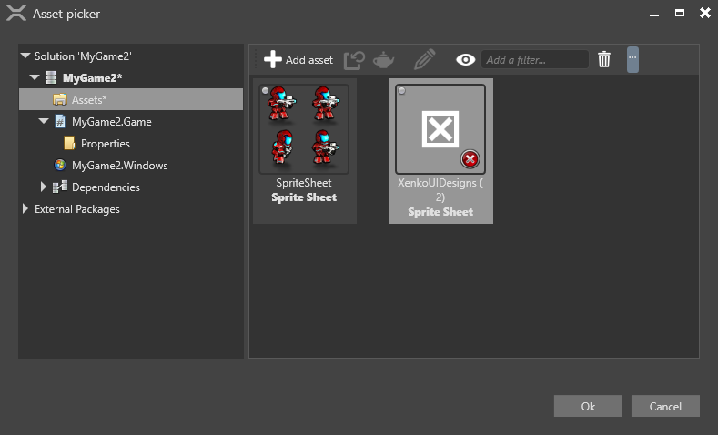

Использование спрайтов
Продвинутый Программист
Чтобы добавить спрайт в сцену, добавьте компонент спрайта к объекту. После этого вы сможете управлять спрайтом с помощью скрипта.
Добавление компонента спрайта
В Редакторе сцен (Scene Editor) выберите объект, к которому вы хотите добавить спрайт.
[!Подсказка] Чтобы создать объект, щелкните правой кнопкой мыши на сцене или дереве объектов и выберите Пустая объект (Empty entity).
В Сетке свойств (Property Grid) нажмите Добавить компонент (Add component) и выберите Спрайт (Sprite).

Game Studio добавит компонент Sprite к объекту.
Из Просмотра активов (Asset View) перетащите лист спрайтов в поле Источник (Source) в компоненте спрайта:
Либо нажмите
 (Выберите актив (Select an asset)):
(Выберите актив (Select an asset)):
Затем выберите лист спрайтов:

Game Studio добавит спрайт к объекту.
Свойства компонента спрайта
Вы можете получить доступ к свойствам компонента спрайта в Сетке свойств (Property Grid)..

| Свойство | Функция |
|---|---|
| Источник (Source) | Исходный файл изображения для спрайта |
| Кадр по умолчанию (Default Frame) | Индекс спрайта в спрайт-листе, который будет отображаться |
| Тип (Type) | Sprite имеет 3D пространство в сцене. Billboard всегда смотрите в камеру и кажется неподвижным в трехмерном пространстве. |
| Цвет (Color) | Применяет цвет к спрайту |
| Интенсивность (Intensity) | Интенсивность, с которой масштабируется цвет (в основном используется для рендеринга LDR-спрайтов в HDR-сценах) |
| Предварительно умножить альфу (Premultiply alpha) | Предварительно умножить компоненты цвета на их альфа-компоненту |
| Игнорировать глубину (Ignore depth) | Игнорировать глубину других элементов сцены при рендеринге спрайта. Это всегда помещает спрайт поверх предыдущих элементов. |
| Альфа-отсечка (Alpha cutoff) | Игнорировать пиксели с низкими значениями альфа при рендеринге спрайта |
| Режим смешивания (Blend mode) | TODO... |
| Сэмплер (Sampler) | Метод выборки текстуры, используемый для спрайта: Точечный (ближайший), линейный или анизотропный (Point (nearest), Linear, or Anisotropic) |
| Swizzle | Как осуществляется доступ к цветовым каналам. Default оставляет изображение неизменным (окончательный RGB = исходный RGB) Normal map использует цветовые каналы как карта нормалей Grayscale (alpha) использует только канал R (конечный RGBA = исходный RRRR), поэтому спрайт красный Grayscale (opaque) тоже, что и Grayscale (alpha), но использует значение |
| Группа рендеринга (Render group) | К какой группе рендеринга принадлежит спрайт. Камеры могут визуализировать различные группы. Для получения дополнительной информации см. Группы рендеринга и маски рендеринга. |
Использование спрайтов в скрипте
Вы можете использовать скрипты для рендеринга спрайтов во время выполнения. Для этого прикрепите скрипт к объекту с компонентом спрайта.
Информацию о том, как добавлять скрипты к сущностям, см. в разделе Использование скрипта.
Пример кода
Этот скрипт отображает спрайт, каждую секунду переходящий к следующему индексу спрайта. После того, как он достигает конечного индекса спрайта, переход зацикливается.
using Stride.Rendering.Sprites;
public class Animation : SyncScript
{
// Объявленные публичные поля и свойства членов отображаются в Game Studio.
private SpriteFromSheet sprite;
private DateTime lastFrame;
public override void Start()
{
// Инициализация скрипта.
sprite = Entity.Get<SpriteComponent>().SpriteProvider as SpriteFromSheet;
lastFrame = DateTime.Now;
}
public override void Update()
{
// Делать что-нибудь в каждом новом кадре.
if ((DateTime.Now - lastFrame) > new TimeSpan(0, 0, 1))
{
sprite.CurrentFrame += 1;
lastFrame = DateTime.Now;
}
}
}